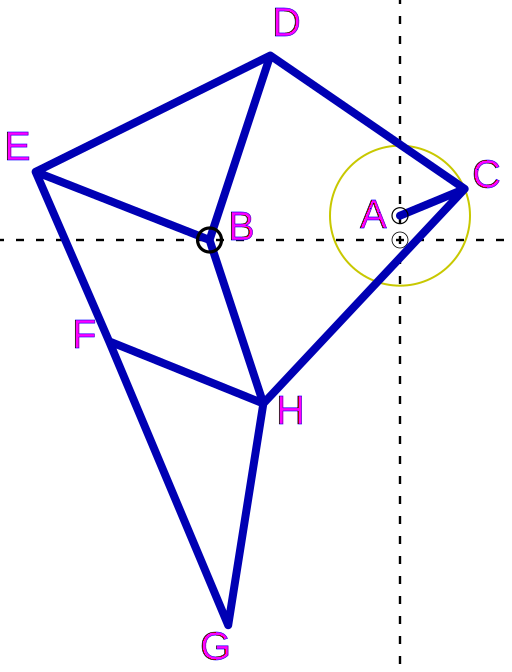

 This drawing will help explain my conventions for naming parts of the linkage:
For a complete chassis hardware setup, using 3/16" OD nylon spacers you will want :
| Bit | Notes |
|---|---|
| #10 | free on 3/16" OD axle and standoffs |
| #11 | [optional. #10 should work] free on 3/16" OD axle and standoffs, if "polished" after drill |
| #12 | Snug (but not press-fit) on 3/16" OD, good for non-moving connections to B-axle |
| #35 | snug, but free around #4-40 screw |
Printed parts list: